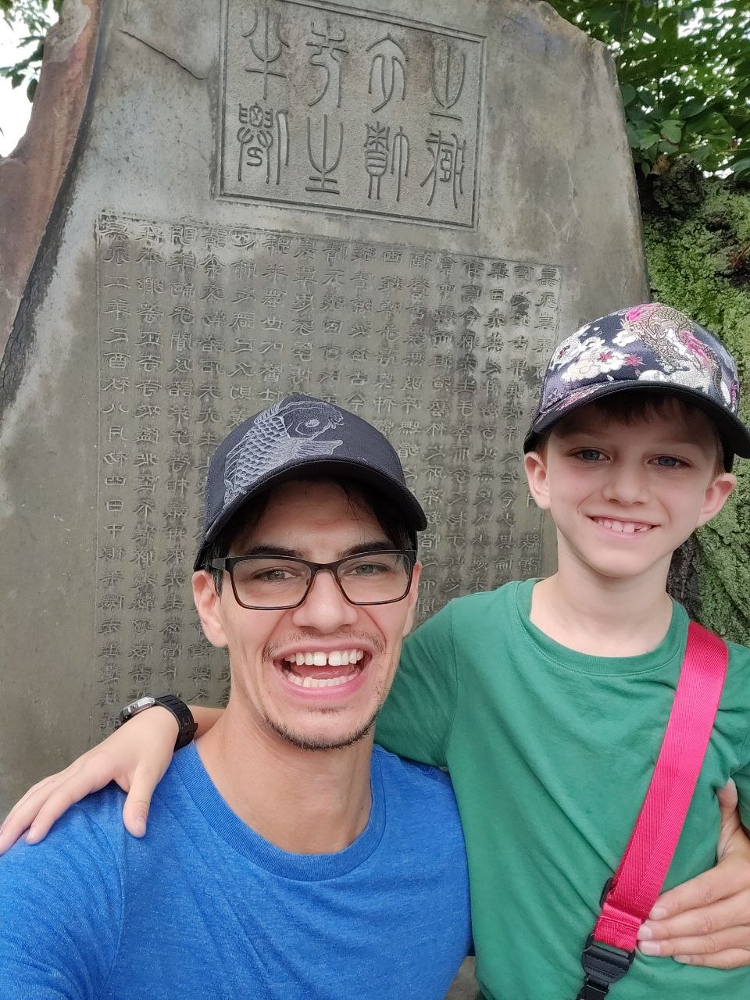
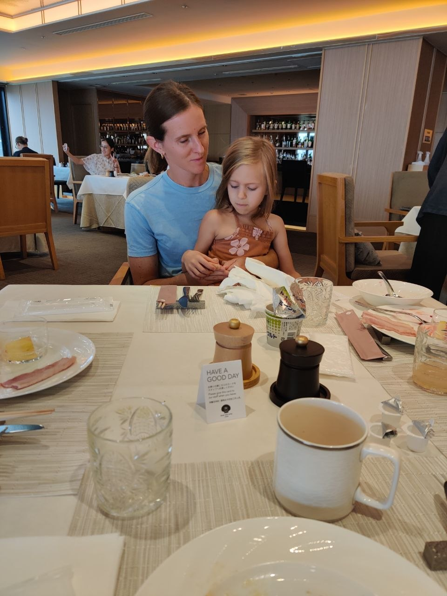
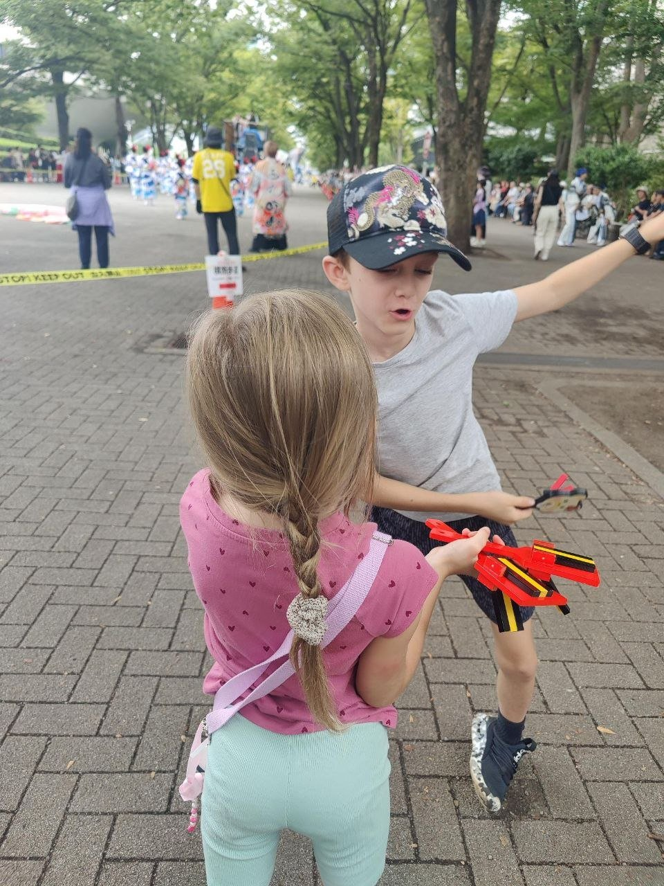
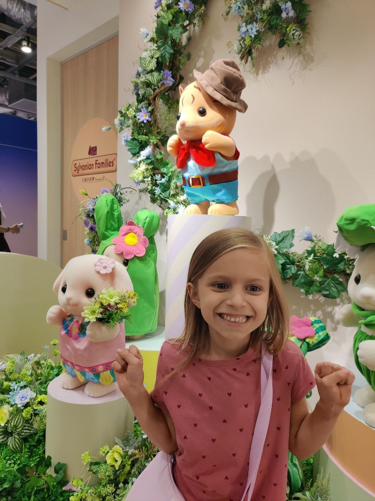
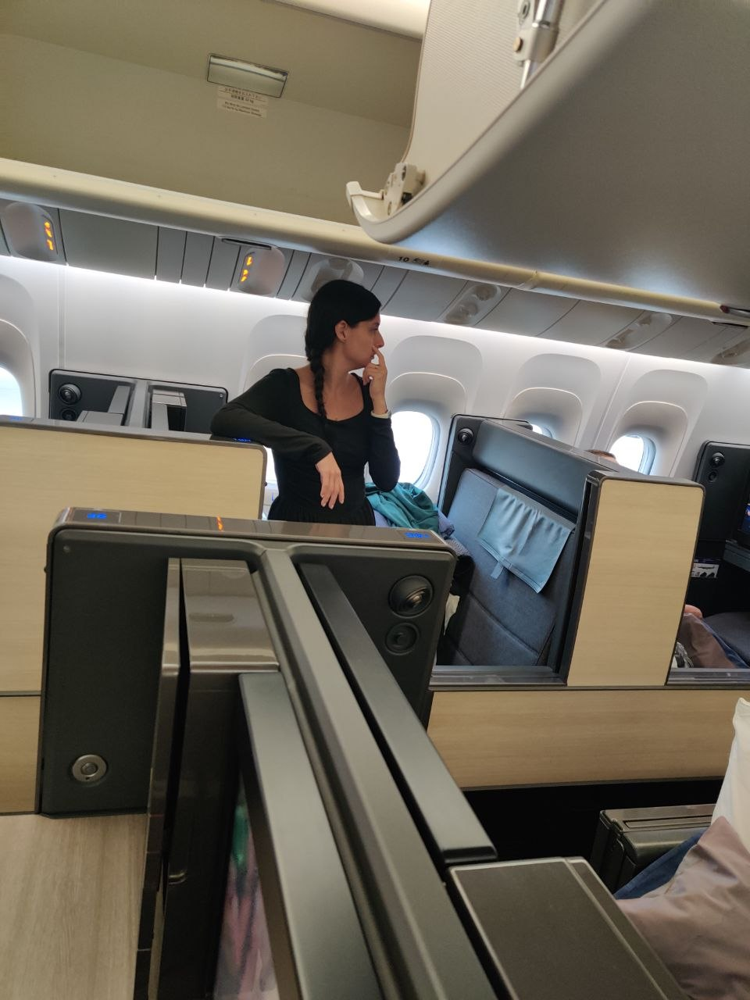

Japan Journey 2026
Aug 21 – Sep 2 · 13-Day Family Log





5 Crew
–
Stories ·
–
Photos ·
–
Stops
✓ All 13 Days Complete
Interactive Trip Map
✓ Trip Complete · Tokyo · Karuizawa · Atami
✨ All (
0
)
🎡 Play (
0
)
🎭 Culture (
0
)
🛍️ Shop (
0
)
🍣 Food (
0
)
🏨 Stays (
0
)
🇯🇵 All Japan
🗼 Tokyo
🗼 Shibuya
🏖️ Atami
🌲 Karuizawa
STOP
Place
—
✕
Read Story →
📍 Maps ↗
✨ Curated Highlights
Favorite moments from all 13 days.
🕐
Timeline
🗺️
Map
✨
Highlights
🔍
Search
Filter by Day or Keyword
✕
×
×